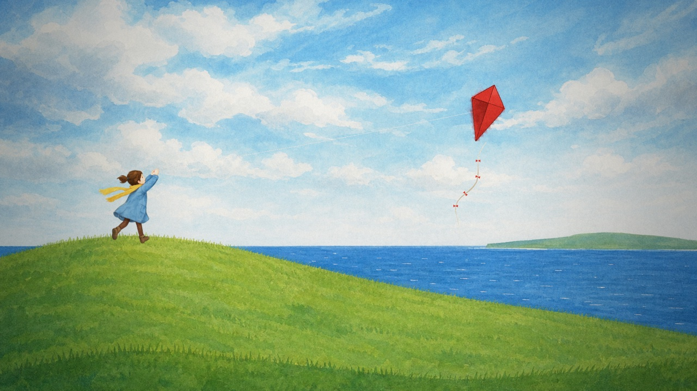
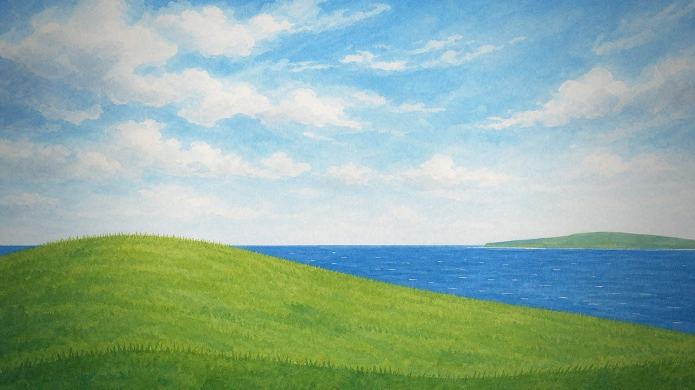
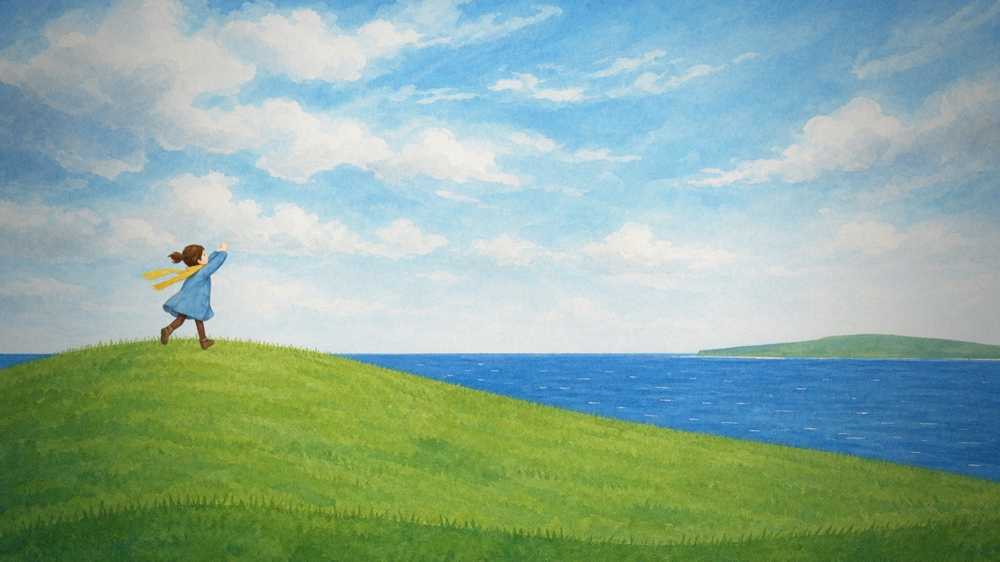
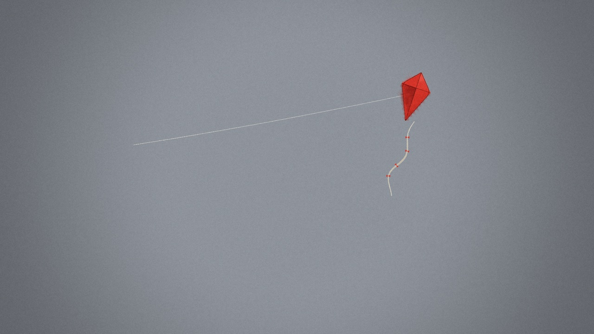
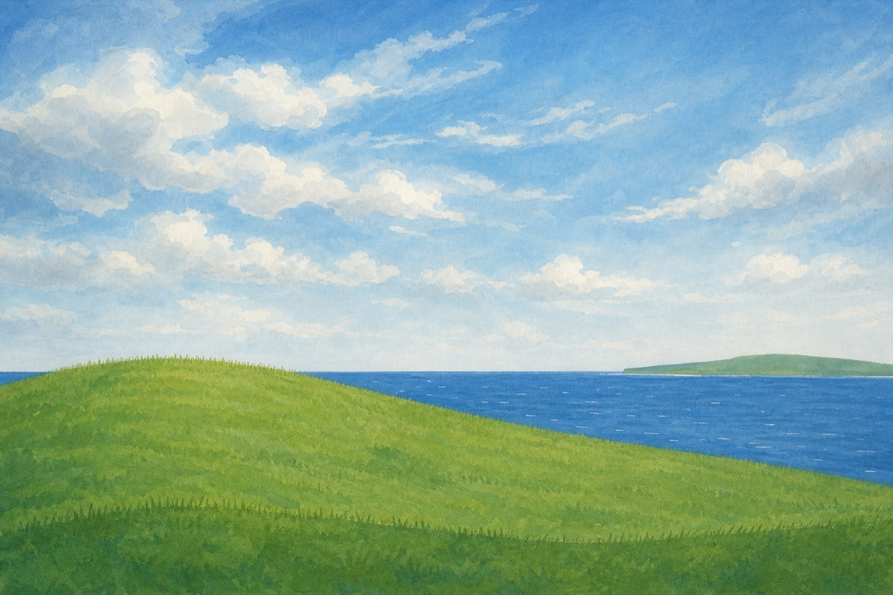
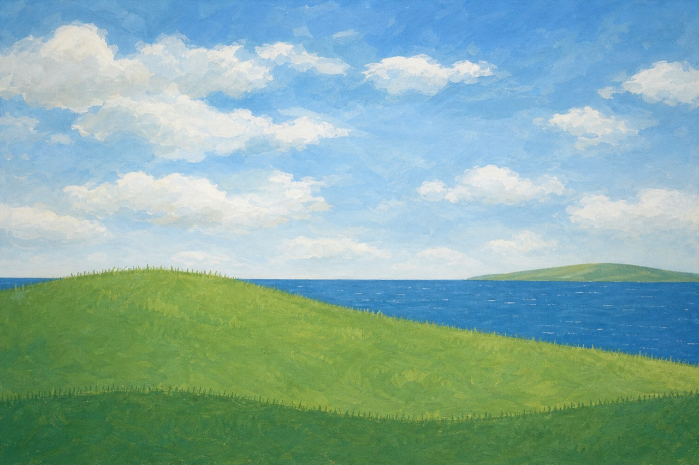
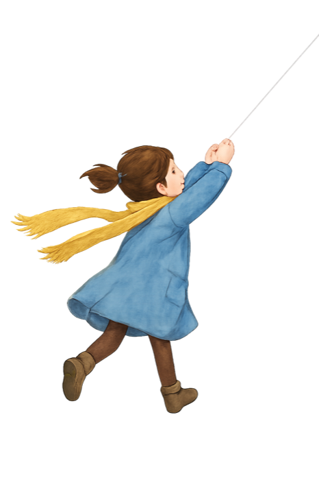
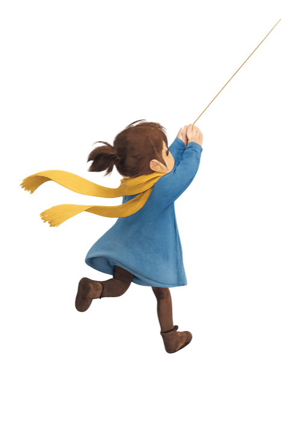

Tether plate pipeline: review of beat 1
Everything that was done to turn storyboard beat 1 into a finished-looking frame, step by step. Every image the model returned is shown, including the rejected ones, along with the exact prompts sent and what each call cost, so you can check the work before we do the other eight beats.
ResultBefore and after


How the frame is builtThree layers, then one finish
Each layer below was rendered on its own from the engine, with the ?only= option this review added. Purple = made by the image model, once, as a still. Blue = painted by our engine, so it can move.



Step 1 · gpt-image-2 · medium · 1536x1024 · $0.105Background plate
I sent the storyboard frame as a composition reference and asked for a finished painting of the same shot with Wren and the kite removed, because those get added separately. Two options for the price of one call.
storyboard-tether/beat1.jpg)

Exact prompt sent (style preamble + shot)
Style: a hand-painted background plate for a 2D animated short film. Gouache and watercolour on lightly textured paper, soft visible brushwork, simplified shapes with clean silhouettes, gentle natural colour, calm and cinematic. Painterly, not photographic, not 3D, not digital-glossy. Background plate only: no people, no animals, no birds, no kite, no text, no logos, no frame or border. Shot 1, wide. Repaint the reference as a finished background painting, keeping its composition: a grassy hill rising on the left to a rounded crest near the left third, sloping down to the right; the open sea beyond on the right with a low distant green headland; horizon a little above the middle. A bright, windy early-afternoon sky with drifting cumulus clouds, lighter near the horizon. Leave the upper-right sky open and uncluttered (a kite will be added there later) and leave the hill crest empty (a child will be added there later). Remove the girl, the kite and its string from the reference.
Usage: 452 text + 1,840 image tokens in · 2,744 out. Saved as web/assets/tether/gen/…; the pick is copied to web/assets/tether/plates/bg1.png.
Step 2 · gpt-image-1.5 · medium · 1024x1536 · transparent · $0.132Wren cut-out
gpt-image-2 returned "Transparent background is not supported for this model." Characters therefore use gpt-image-1.5, which outputs real transparency. Nothing was charged.The finished plate was sent as a style reference, so she's painted to match it. The character description lives in a separate style file, so every future pose describes the same girl.


Exact prompt sent (character style + pose)
Style: a single character cut-out for a 2D animated short film, painted to sit on top of hand-painted gouache and watercolour backgrounds (the reference image shows the background style). Same soft gouache brushwork and gentle natural colour as the reference, with a clean readable silhouette and a thin, slightly darker painted edge. Painterly, not photographic, not 3D, not glossy. Full body, nothing cropped, isolated on a fully transparent background: no ground, no shadow, no scenery, no text. Character, Wren: an eight-year-old girl. Dark brown hair in a short ponytail. A mid-blue knee-length wool coat, dark brown tights, small dark brown boots. A long mustard-yellow knitted scarf whose ends stream out in the wind. Simple, appealing, storybook proportions (large head, about four heads tall), small calm features. Pose: seen from three-quarter behind, running uphill toward the right, both arms raised up and forward to the upper right, hands together gripping a kite string (draw only a short piece of thin white string leaving her hands toward the upper right). Wind from behind her: scarf ends and ponytail streaming to the right. Joyful, mid-stride.
Usage: 560 text + 646 image tokens in · 3,866 out. Alpha checked: about 83% fully transparent, 10% opaque, 6% soft edge. The cut-out is clean.
Step 3 · code, $0Putting it together
| What | How | Why |
|---|---|---|
| Fit the plate to 16:9 | Plate is 3:2 (1536×1024). Scaled to 1920 wide and cropped 120 units off the top. | The model doesn't output 16:9. |
| Stand Wren on the hill | Traced the hill's top edge from the plate's pixels (green-vs-sky test every 64 px), then put her feet on that line at x = 360. | The hill is a painting now, not a curve in our code, so its edge had to be measured. |
| Size Wren | Scaled the cut-out to 0.235 (about 200 px tall at 1080p). | Small figure, big sky: the kite is the star. |
| Join her hands to the string | Cut off the top 440 px of her image, which removes the stub of string the model drew, and started the engine's string at her hands. | The drawn stub pointed steeply up; the real kite is to the right. |
| Calm the kite | Kite scale 1.6 → 1.15, thinner tail, fewer and smaller bows. | Against a real painting the old kite looked like a sticker. |
| Finish | Same post-processing as every film: grade, light vignette, paper texture, grain. Bloom kept low. | One finish over both kinds of art is what makes them read as one film. |
Your callThings to check before we scale up
NextPlan and cost if this looks right
| Step | Calls | Est. cost |
|---|---|---|
| Background plates for beats 2–9 (2 options each) | 8 | ~$0.85 |
| Wren poses: cliff (taut string), lying in grass, with lantern, mending hands, leaning back | 5 | ~$0.35–0.65 |
| Composite all nine in code, rebuild storyboard | 0 | $0 |
| Projected film total (incl. $0.24 so far) | ~$1.45–1.75 |